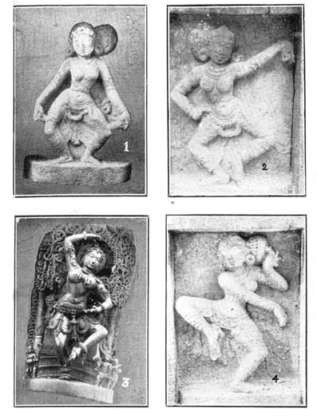
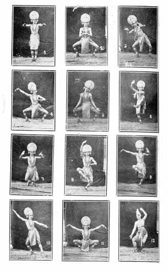

Dance Traditions of South India
BY K. V. RAMACHANDRAN, B.A.
Something of the beauty of the early Hindu art survives in the indigenous dance and drama,–in the ‘Terukoothu’ of the Tamils, the ‘Veethi Nataka’ of the Andhras, the ‘Bayalatta’ of the Kannadigas, in the dynamic attitudes of ‘Kathakali,’ in the refined idiom of the nautch, in the curves and contours of the ‘Kuchipudi’ dance. Transplanted in by-gone ages in Siam, Cambodia and Java, these very arts continue to ‘astonish, enrapture, elevate’ not only the peoples of those far-off countries, but also many European lovers of beauty, thanks to whom the dances of these countries are known to us far better than those of our own. It is not any casual resemblance that these arts have in common, but an identity in their basic technique of gesture sequences and floor contacts, and those vital attitudes that sum up a series of fleeting attitudes in one expressive movement–an identity so close and continuous that to derive these diverse systems from the classic dance of India, is to prove the obvious. A brief review of some of the salient features of the South Indian traditions indicating the points of contact with one another and with the classical dance is all that is attempted in the following pages.
(1)
The Yaksha Gana players of the Karnataka represent an authentic school of Indian dance that deserves to be preserved at all costs. Through a word and a step and a beat of the drum, these artists create portraits of epic heroism and raise visions of battles made beautiful through art. The gorgeous costume, the towering ‘kirita’ that accentuates the toss head, the mammoth girdle that suggests mountainous strength, the rhythmic movements, steps and gyrations in which anger incarnates itself, the sophisticated attack, counter-attack and defence, in dance language–the ‘yuddha charis,’ ‘nyayas’ and ‘pravicharas’ of Bharata–to the accompaniment of fierce challenges, disdainful admonitions–the powerful ‘vachi-kabhinaya’ in which the modulations of voice enrich and galvanise words, intertwined with the thrilling cadences of the drum–every little detail helps to recapture the beauty of heroism and courage. The lure of the battle exercises an unique fascination over these artists and they revert to it again and again, even creating situations for it where the original stories do not warrant them. Next to these dance pictures of war, a feature shared by the ‘Terukoothu’ which has a specific terminology for these, ‘vachikabhinaya’ is the most noteworthy feature of this school, viz., ‘abhinaya’ that resides not only in the speech but in the nuances of voice that render it–the crescendo of the challenge, the thunderous cry that announces the Rakshasa’s ferocious wakefulness and the many other significant modulations and silences. No wonder that this powerful ‘vachikabhinaya’ has relegated ‘angikabhinaya’ to the background and confined it to certain characters and situations. The most beautiful feature of this art is its use of pure dance,–a feature characteristic of ‘Terukoothu’ as well–as a prelude to speech and an accompaniment to song, very much like a motif of flower and foliage twining in and out of human and divine figures, a kind of dance analogue of the decorative architectural designs that encase and set off sculpture. The feminine dances of this school belong to a far lower plane of expression and are comparatively feeble and unconvincing. A reference to the Karnataka dancers would be incomplete if homage is not paid to Ganapati Prabhu of Sri Perudur, an artist of high rank whose movements in general and neck-movement (‘griva rechaka’) in particular are marked by natural grace and restraint.
(2)
If the feminine dances of the Yaksha Gana fail to convince by their feebleness, those of the Kuchipudi school are exceptionally vigorous and energetic, though perhaps they are hardly what one would call feminine. It would be rash for the present writer to formulate judgment on the Kuchipudi artists from a single much-abridged performance of ‘Usha Parinaya’ rendered in, incongruously modern attire, but that they triumphed over all handicaps is due to the dance whose essential beauty nothing could suppress. ‘Vachikabinaya’ of a very distinct kind there is in this art, along with an elaborate and sometimes over-elaborate ‘angikabhinaya,’ but one missed the delicacy and daintiness of the nautch, especially the co-ordination of the intricacies of facial expression, the play of mood and countermood and the ‘hastabhinaya’; one missed too the continuous syllabification by the feet that accompanies significant gestures in certain compositions of the nautch–a sacrifice perhaps rendered necessary by the dramatic end in view. But of strength and power there was an abundance, in place of the refinements of the nautch, which inhere partly in the dance itself and partly in the feminine medium that expounds it. It is not known whether the Andhra repertoire includes evolutionary compositions similar to those of the nautch, with parts organically related, though the materials for building up these are present as well as repetitive sequences called ‘muddayis’ similar to the Tamil ‘tirmanas.’ The chief merit of the Kuchipudi school is that it preserves a balance among the several modes of ‘abhinaya’ of which ‘natya’ is the coincidence, more than the Karnataka or South Canara school where ‘vachikabhinaya’ has overshadowed ‘angabhinaya’ and the Kathakali wherein ‘angabhinaya’ has elminated the ‘abhinaya’ of speech. As in the other systems, pure dance constitutes the glory of the Kuchipudi school,–especially its series of specific ‘nritta hastas,’ floor contacts and attitudes, some of which are to be found in the nautch, but which other traditions appear to have forgotten. In this respect the Kuchipudi system has closer affinity to the nautch than to any other school: the ‘nritta hastas’ (patterned movements of the hands), as in the nautch, have maintained a precision and clarity, in comparison with which those of Kathakali appear uncertain and, indefinite. The repertoire of the Kuchipudi artists includes a number of rare cadences absent from most of the parallel traditions, for instance, the cadence ‘thom dhimi’ in which the torso along with the arms executes a very graceful forward and backward flexion. To the dance of the future, the Kuchipudi system has undoubtedly many precious gifts to offer. Vedantam Raghaviah claims the honours as the best exponent of this school by his amazing record in speedy execution; but the homage that is due to knowledge belongs really to his Guru, Chinta Venkataramiah, who trained him. This ancient is a master of the art,–the last among a line of ‘Natyacharyas’ and one of the few living authorities on the subject.
(3)
The following notes on the Kathakali are based chiefly on the recitals of Gopinath, the talented partner of Ragini Devi, and to a small extent on the rehearsals of Vallathol’s troupe at Madras on its way home. To the courtesy of Ragini Devi are due the accompanying illustrations of herself and of Gopinath; the prints from sculpture are the writer’s own, gathered many years ago1 for the purpose of study more than that of reproduction,–a circumstance that explains their indifferent quality as photos.
The first noteworthy feature of the Kathakali is its rejection of ‘vachikabhinaya’ for the purpose of intensifying ‘angikabhinaya’; that by such sacrifice ‘angabhinaya’ has gained volume as well as power, needs no proof. The technique of ‘hastabhinaya’ is similar to that of the nautch, but while the ‘abhinaya’ of the nautch is passionate and lyrical and, in its higher manifestations, interpretative and creative, that of the Kathakali is, in accord with the text of the play, often descriptive and sometimes transcriptive, but dynamic always and dramatic. More than the play, the skill and imagination of the artists who interpret it determine the character of ‘abhinaya’ in the Kathakali; how profound and moving the ‘abhinaya’ could be and to what heights of persuasive eloquence it could soar was witnessed in the duet between
Krishna and Arjuna, especially the iterations of Krishna in the transcendental symbology of gesture. Here was a language which, more than Sanskrit, was the speech of the gods; and who would distract its ceremonious beauty and infinite suggestiveness with a painted Curtain or other mechanical aid when it needed none? At its highest, the Kathakali is an all-comprehensive art.
At ordinary levels, however, the Kathakali reveals a distinct realistic bias and prefers to serve the actual in place of the imaginative visions of the actual,–an instance of the concession that Art had to make to Life in the interests of intelligibility. How could uncultivated audiences follow the ‘abhinaya’ narrative, by itself sufficiently unintelligible, made doubly obscure by the omission of speech? Realism provided an easy way out of the difficulty. That the Kathakali made use of it is no wonder, because other traditions have reacted like-wise under similar circumstances,–the serious Terukoothu, for instance, that exhausted itself in a debauch of low Comedy. Lovers of the art who call the Kathakali ‘primitive’ and on the strength of that adjective claim a pre-Aryan antiquity for it, have no more basis for their theory than the abrupt realism of the Kathakali which, from Bharata’s point of view, was a shortcoming inevitable in the ages when his ideals were forgotten. And those among us who bestow a distant and formal patronage on the Kathakali on account of its origin in a period of general decadence are apt to exaggerate its lapses and overlook its essential beauty and its very genuine claims to represent the ‘Natya’ of Bharata. The Kathakali is no isolated curiosity from Kerala, but one of the many parallel traditions that Bharata’s’ teachings have inspired.
The gesture materials employed by the Kathakali in fact are as old as Bharata; whether its immediate source was the aristocratic Cakkiar Koothu or the Krishnan Attam, its ultimate source was the very system on which the Cakkiar Koothu and the Krishnan Attam had based themselves, viz the classical Dance Art of ancient India of which Bharata was the theoretical exponent. What matters it if, like Ekalavya, the Kathakali obtained its gift of knowledge indirectly? On the basis of the dance vocabulary of the Kathakali which is far anterior to the 17th century, the legend that assigns the Kathakali to this age, instead of being understood literally, should be interpreted to signify some phase in the vernacularization of the Sanskrit Drama, when the Kathakali broke away from the parent system, either because of its aggressive realism or because it discarded some essentials of that system. Legends do not constitute history, though sometimes they embody valuable historical truths.
‘Cakha’ was the name of a system of ‘abhinaya’ that employed beautiful and variegated movements of the entire arm, called ‘vartanas.’ Each of the ‘abhinaya hastas’ had a corresponding propelling movement, and the form of ‘angikabhinaya’ accompanied by these whole-arm movements was known as ‘Cakhabhinaya.’ Our knowledge of the ‘vartanas’ is derived from a passage from Kohala abstracted by Kallinatha in his commentary on the ‘Sangita Ratnakara.’ To what extent the dance of the Cakkiars is based on ‘Cakhabhinaya’ and whether the classical ‘vartanas’ have found their way into the Kathakali through that source, are questions that await detailed investigation at the hands of scholars. The reference in ‘Cilappadikaram’ is unmistakably to the expert in Cakha.
The linear decorations of the face, especially the extensions of the line of the eyebrow and eye for the purpose of accentuating the ‘abhinaya’ of the face (‘upanga abhinaya’), the painted approximations of the mask which render the character impersonal and simultaneously limit the ‘abhinaya’ to one dominant emotion, the costume and make-up generally, are features that the Kathakali shares with the Tamil, Telugu and Karnataka traditions of the open-air drama, and the advantage of artistic merit in some respects is in favour of the latter. So also the technique of ‘angikabhinaya,’ is one that is familiar to the nautch and the Kuchipudi Bhagavatars. But the Kathakali’s right to recognition as a classical art is based on its memory, at least in outline, of some of the ancient dance cadences,–the ‘karanas’–and its use of these supremely expressive forms in ‘abhinaya.’ Some of the more graceful and seductive of these cadences occur in the nautch and to some extent in the Kuchipudi system as well, as pure dance, but neither the nautch nor the Kuchipudi school employs them as media of ‘abhinaya’ as the Kathakali unmistakably does.
What is a ‘karana’? ‘Karana’ is the cadence of the body in dance that resolves itself into a patterned movement of the hands (‘nritta hasta’) and a corresponding beautiful movement of the feet (‘chari’), preceded and followed by a rhythmic and harmonious attitude of the body (‘sthana’). The ‘vaishnava sthana’ for instance–that attitude in which the Buddha is represented at Ajanta–was one in which the chest was thrown slightly forward, body flexed graciously and relaxed, and the feet a little parted, with hands to correspond; when such an attitude was co-ordinated in a continuous and exquisite movement, the cadence was known. as a ‘karana.’ A sequence of these ‘karanas’ in a predetermined order and within the limits of ‘tala,’ formed the classical ‘angaharas’–the theme of Siva’s dance. It is worth remembering that this is an imaginative dance that rejects the burden of the human spirit and interprets neither ‘pada’ nor ‘vakya’ and accepts no theme or programme other than itself,–a thing of beauty like the ‘raga’ in which the end is not distinct from the means, the form from the matter, the subject from the expression. Later, when the classical playwright sought to make his poem visible on the stage, he readily seized these cadences of dance and music (‘karana’ and ‘raga’) as his media of visible and audible expression. Thus the karana 2 ‘leenum’ was employed in situations where the heroine was beseeching her lord; ‘apaviddham’ in anger; ‘valitorukam’ in the coy love of the ‘mugdha’; ‘swastika rechitam’ in joy; ‘nikuttanam’ in self-importance; ‘katichhinnam’ in wonder; ‘vakshaswastikam’ in sympathy; ‘unmattakam’ in pride born of beauty-consiousness; ‘mattalli’ in love etc. A less exalted office was sometimes assigned to some of the ‘karanas,’ for instance, ‘samanakham’ announced the commencement of the dance; ‘dikswastikam’ indicated the change of music; and ‘akshiptam’ denoted the clown. According as these cadences were intended for men or women, they divided themselves into two classes,–the ‘uddhata’ or forceful, energetic kind which embraced such ‘karanas’ as ‘garudaplutakam,’ ‘dandakarechitam,’ etc., and the ‘sukumara,’ the graceful and dainty, some of which have already been mentioned as having found employment in crucial situations of the play. The great Abhinavagupta has, in his invaluable commentary on the ‘Natya Sastra,’ given us a good number of passages from ancient Prakrit dramas for the appropriate introduction of the ‘karanas,’ a study of which is indispensable for the student of Indian dance. If some of the daintier cadences have been appropriated by the nautch, the Kathakali has retained in outline some of the ‘uddhata’ movements.
It is not claimed that the Kathakali artists render these movements by employing the very ‘nritta hastas’ and ‘charis’ enjoined by Bharata. In fact, the dances have undergone a twofold change: in many instances, what were originally cadences have congealed into attitudes that neither begin nor end the movement, but occur in the middle of it; in other instances, what were originally immobile attitudes have developed a swaying movement in dance and ‘abhinaya.’ However confused the memory and displaced the attitude, the memory is unquestionably there; and the Kathakali remains one of our principal sources for reconstructing the classical dance.

Every movement of dance begins with a basic attitude–‘sthana’–and the classic attitudes are many, and of these the nautch prefers some, while Kathakali prefers others. Sculpture print (1) illustrates the beautiful disposition of the body at the commencement of the dance in ‘mandala sthana’–the ‘lata hastas’ reaching down to the knee creeper-wise, hip lowered, thighs and legs bent and turned gracefully, the feet looking towards either side with an interval of one ‘tala’3 between them. The 'mandala sthana,' but with the hands arranged differently, is a very common attitude in nautch and the ‘karanas’ carved at Chidambaram from a girl model, with very few exceptions, have all been rendered from this basic attitude. A predominantly masculine art that Kathakali is, the ‘vaicakha sthana’ with an interval of three and a half ‘talas’ between the feet, is the natural and most common Kathakali attitude. Gopinath’s poses: (Nos. 2, 3, 4 and 5) illustrate the disposition of the legs in this posture.
Sculpture (2) is the end of a cadence called ‘ardha-mattalli’ expressive of the intoxication of youth, rendered from the ‘mandala sthana.’ This ‘ardha mattalli’ is an eternal favourite with the South Indian sculptor who has given endless reproductions of it at Chidambaram, Kumbakonam, Darasuram, Tanjore and Madura. This occurs in the Kathakali on a basic ‘vaisakha sthana’ instead of the ‘mandala’ (fig. 4 of Gopinath) as an attitude of ease from which the hero surveys his beloved and takes in every detail of her form before describing her perfections. In the classical dance, this is a movement, whereas in Kathakali it is just an immobile but rhythmic attitude.

The ‘karana’ was the co-ordination of the beautiful movements of hands and feet. The ‘nritta hastas’ were the patterns of beautiful movements of hands; the ‘charis’ were the corresponding beautiful movements of feet. These ‘charis’ were of two kinds,–the ‘bhoumya’ and the ‘akasa’ charis; in the former the feet never lost contact with the ground; in the latter the foot was lifted away from the ground, The movement which lifted the left foot of the Nataraja and sent it athwart the right leg is an example of an ‘akasa chari.’ Though the nautch and Kathakali are familiar with both these classes of movements, the nautch finds more frequent employment for the ‘bhouma charis;’ while Kathakali prefers the ‘akasa charis’ more often. ‘Sculpture (4) gives a, vivid idea of the ‘oordhvajanu’ foot movement in co-ordination with the hand movement ‘karihasta.’ Figure 8 of Gopinath gives the Kathakali equivalent of the ‘oordhvajanu chari’ along with an upward movement of the hands. This attitude occurs in the middle of a forward movement in the ‘kalasam’ of 8 ‘matras’ beginning ‘takrukruta’–a vigorous movement employed in heroic situations. Sculpture (3) from Belur, the 12th century capital of the Hoysalas, is a sculptor’s version of a similar movement from an entirely different part of India, the northern extremity of Mysore. Another print in the writer’s possession tallying more closely with that of Gopinath could not be included because the hands were out of focus, The reason for matching this 12th century carving with Gopinath’s dance is to indicate the common source of both; viz., the classical dance of India. A preliminary movement called ‘chuvadu’ employs the same foot movement, (Fig. 9)
The ‘swastika’ movement in which the feet cross each other, occurs in a ‘misra gati kalasam’ of the formula ‘tai–dhi tai–dhi ti tai–dhi ti ti tai’ in which the dancer moves sideways to the right and left in accord with the syllables. This furnishes another contact with ancient dance. Figure 7 is the end of the first movement, and the entire movement may he any one of those cadences in which the feet keep crossing each other,–possibly the ‘uromandalam.’ With a touch or two Gopinath’s semi-seated posture at the beginning of his ‘garuda’ dance: may well approximate to the classical ‘gridhravalinakam.’ Figure 5 which looks like the end of the ‘karana vartitam’ in ‘vaisakha sthana’ is frequently employed in the Kathakali to denote grief. The Kathakali has a dance portrait of the elephant, and at the end of it occurs the Kathakali equivalent of the arm-movement ‘karihasta’ together with an upraised knee (fig 6). Figure 1 is the usual attitude of rest in the Kathakali and has been included for being compared with a similar posture in the nautch. Figure (2) represents something similar to the karana ‘takapushpaputam’ on a basic ‘vaisakha sthana,’ but the movements of which bear no resemblance to those of the classical cadence. Figure 11 is a combination pose,–the pose of hands of one ‘ kalasam’ having been fitted on to the semi-seated posture of another; in effect the picture appears as if the karana ‘unmattaka’ had been rendered in an ‘upavishta sthana.’ And that terrible attitude (fig. 10) in which anger has taken bodily shape,–one leg thrust forward in a pointed stride and the head and torso tilted backward to produce a vibrant line, may well represent the Kathakali recollection of the Bharata cadence ‘soochi’; an Aswatthama may very appropriately enter the stage in such a manner in quest of his father’s murderer.
Fig. 3 is from a ‘kalasam’ called ‘rettivattam’ in which the body is flexed now to one side and now to the other with a semi-circular movement, the hands forming alternately a ‘sandamsa’ and ‘alapallava.’ This ‘sandamsa-alapallava’ alternation, corresponding to the ‘hamsasya-alapallava’ combination of the nautch, is the most frequent hand accompaniment to floor contacts in the Kathakali. These very ‘hastas,’ but with an upward direction, occur in the fine picture of Ragini Devi (fig. 12) which illustrates not only the beautiful flexions of a typically feminine attitude, but also the artiste’s easy familiarity with the Kathakali technique.
No description of the Kathakali could ignore the significance of the drum in this wonderful pantomime. Those who have seen Gopinath’s little masterpiece–the hunter’s dance–would recollect what an integral part of the movement the drum cadences were. Indeed the drum furnishes an intimate and unique kind of commentary on every turn of the head and hand, every glance of the eye, every movement of the eyebrow in ‘abhinaya’ and dance,–refinements that by themselves deserve a whole chapter.
What is a ‘kalasam’? According to Sarangadeva, ‘kalasam’ was an instrumental finale in which the drums and cymbals took part; when the ‘kalasam’ was played, the danseuse was directed to remain still and motionless as in a painted picture. But the ‘kalasams’ of the Kathakali are dance sequences corresponding to the ‘tirmanas’ of nautch. It is a common phenomenon in the history of dance for a drum sequence to get converted into a dance sequence; for instance, the ‘malapanga’ and ‘malapa’ drum sequences survive as the dances ‘chinna malappu’ and ‘periya malappu’ in the nautch,–sequences of pure dance (nritta) performed in front of the processional deity at the four cardinal points. It is the ‘kalasams’ that embody the greater part of the ‘tandava’ attitudes and are therefore a vital part of the Kathakali. ‘Kalasams’ are many and varied and known by such names as ‘eduthu kalasam,’ ‘vattamittu kalasam’ etc; sometimes these names denote more than one ‘kalasam.’ Gopinath mentions an ‘ashta kalasam’ corresponding to the ‘tillana’ of the nautch. In our quest after the forgotten dances of ancient India, the Kathakali technique in general and the ‘kalasams’ in particular hold the key to an important part of the materials that elude us elsewhere.
Why these beautiful ‘kalasams’ were omitted from the programme of Vallathol’s troupe, and why the inevitable stool replaced the wonderful ‘upavishta sthanas’ of dance, are questions I have never been able to answer. Among the first to discern the beauty of the Kathakali and the first also to spread its message in other provinces, Ragini Devi, it must be owned, has made liberal and excellent use of the pure dances of the Kathakali in her recitals.
(To be concluded)
1
1, 2 and 4 from the precincts of the temple of the Goddess at Chidambaram, and 3 from Belur.2
For sculptures of ‘karanas’ from the Nataraja temple, Chidambaram, the reader is referred to the Madras Epigraphical report, 1914; Mr. M. Ramakrishna Kavi, M.A., has reproduced these in the edition of the ‘Natya Sastra’ Vol. I, published by the Baroda Durbar.3
‘Tala’ was a unit of linear measurement and denoted the length between the outstretched thumb and forefinger.